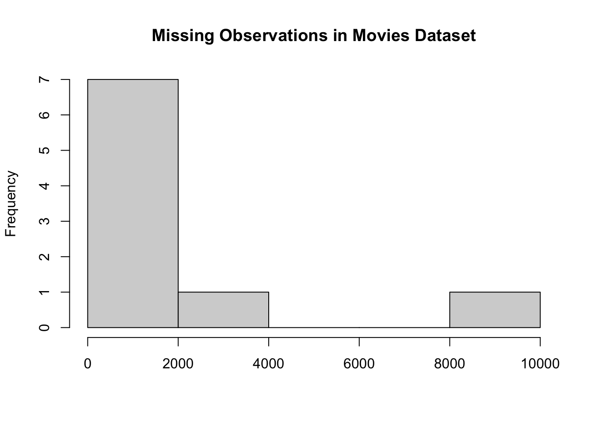
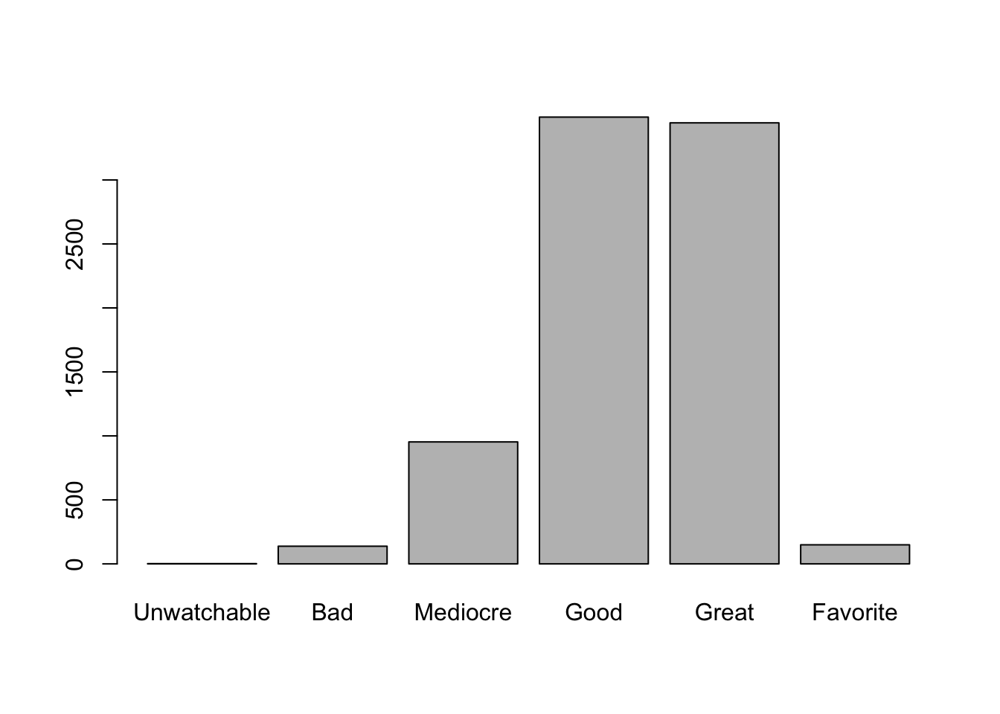
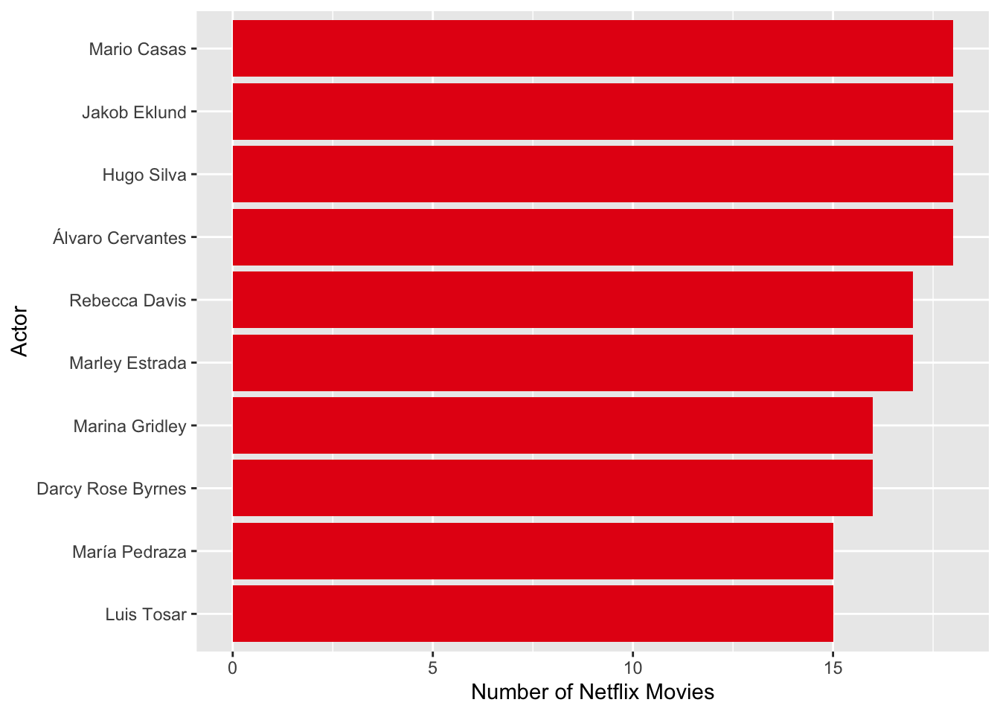
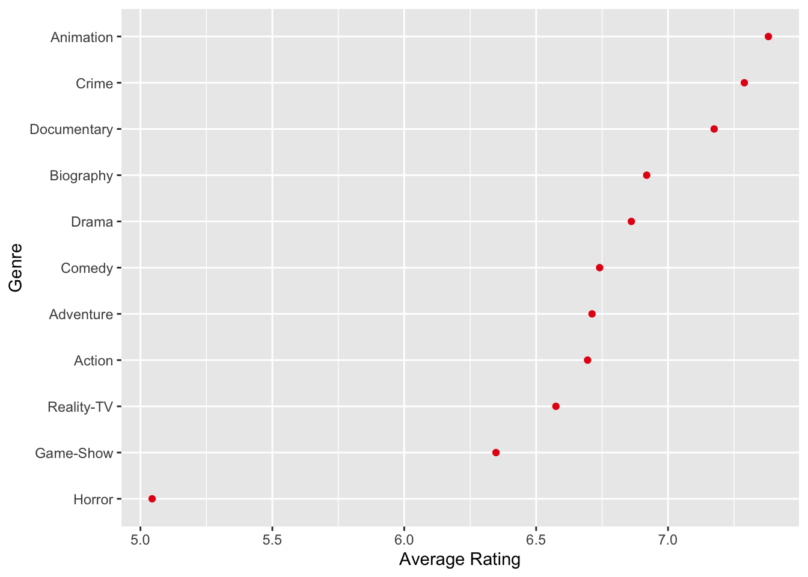
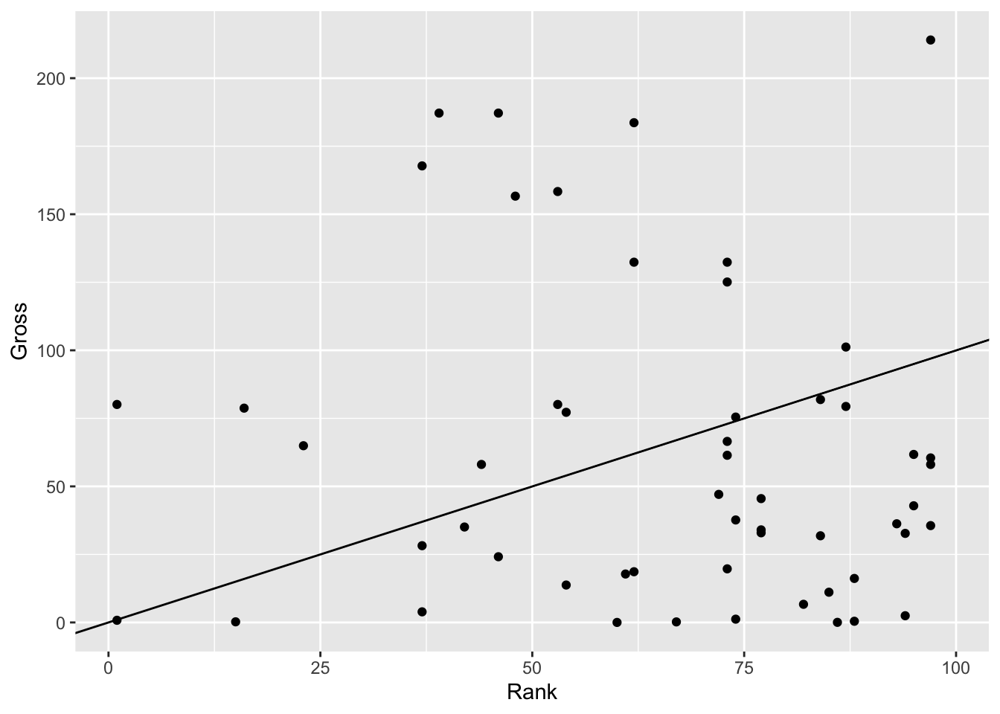
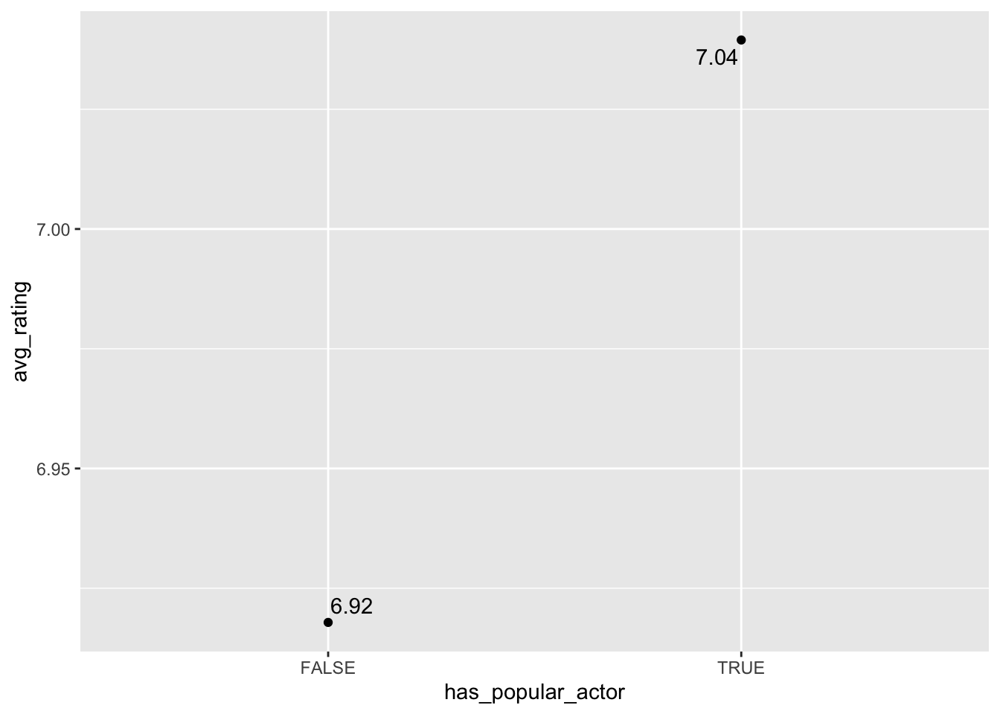

# Set up
cat("\014") # clear the consolerm(list=ls()) # clear the environment
set.seed(1738) # set seed for any random operationsFor this document, we will be using a dataset scraped from IMDB’s top Netflix movies and TV shows, obtained from Kaggle.
First, we want to understand what our data contains (column names, dimensions, data types, etc.).
'data.frame': 9999 obs. of 9 variables:
$ MOVIES : chr "Blood Red Sky" "Masters of the Universe: Revelation" "The Walking Dead" "Rick and Morty" ...
$ YEAR : chr "(2021)" "(2021– )" "(2010–2022)" "(2013– )" ...
$ GENRE : chr "\nAction, Horror, Thriller " "\nAnimation, Action, Adventure " "\nDrama, Horror, Thriller " "\nAnimation, Adventure, Comedy " ...
$ RATING : num 6.1 5 8.2 9.2 NA 7.6 6.8 8.6 7.9 7.4 ...
$ ONE.LINE: chr "\nA woman with a mysterious illness is forced into action when a group of terrorists attempt to hijack a transa"| __truncated__ "\nThe war for Eternia begins again in what may be the final battle between He-Man and Skeletor. A new animated "| __truncated__ "\nSheriff Deputy Rick Grimes wakes up from a coma to learn the world is in ruins and must lead a group of survi"| __truncated__ "\nAn animated series that follows the exploits of a super scientist and his not-so-bright grandson." ...
$ STARS : chr "\n Director:\nPeter Thorwarth\n| \n Stars:\nPeri Baumeister, \nCarl Anton Koch, \nAlexander Scheer, \nKais Setti\n" "\n \n Stars:\nChris Wood, \nSarah Michelle Gellar, \nLena Headey, \nMark Hamill\n" "\n \n Stars:\nAndrew Lincoln, \nNorman Reedus, \nMelissa McBride, \nLauren Cohan\n" "\n \n Stars:\nJustin Roiland, \nChris Parnell, \nSpencer Grammer, \nSarah Chalke\n" ...
$ VOTES : chr "21,062" "17,870" "885,805" "414,849" ...
$ RunTime : int 121 25 44 23 NA 50 110 53 30 44 ...
$ Gross : chr "" "" "" "" ...# Another good function to use is head(), which will show you the X first rows in a dataset
head(netflix, 5)[1] 9999 9[1] 9999[1] 9Here, we can see that we have several numeric/date columns that are character data, not numeric. That is one aspect we will need to fix when cleaning the dataset. We also have messy columns like the STARS column, which features a list of the director and actors.
Another aspect we want to check is how much data is missing.
[1] 4778 MOVIES YEAR GENRE RATING ONE.LINE STARS VOTES RunTime
0 0 0 1820 0 0 0 2958
Gross
0 Based on this, we can see that RATING and RunTime are missing data. However, note that our character columns have no missing data. To verify this, we can check if there are empty text cells:
MOVIES YEAR GENRE RATING ONE.LINE STARS VOTES RunTime
0 644 80 NA 0 0 1820 NA
Gross
9539 We can see that most rows are missing from the Gross column, and there are also many missing from Year and VOTES.
hist(colSums(netflix == "" | is.na(netflix)), main = "Missing Observations in Movies Dataset", xlab = "")
Which rows you remove because of missing data depends on what you need from the data and what you are analyzing. There will also be situations where you can fill in missing data with the mean, median, or other values as appropriate.
For example, here, we will remove any rows that are missing YEAR or RATING, but keep rows that are missing Gross, Genre, and Runtime.
Another important aspect of data exploration is visualizing distributions of columns. We did a bit of this with colSums() and looking at missing data, but we can do more, such as seeing unique values in a column or the distribution of a numeric variable.
Here, our YEAR column is currently a character/string column, meaning it is quite messy. Because of this, table(netflix$YEAR) prints over 400 different values for year. While it’s commented out because it’s messy, it’s still important to run it and examine. We see that there are non-year values in the column, like roman numerals.
# average
paste0("The mean rating of Netflix movies and series is ", round(mean(netflix$RATING), 1), "/10")[1] "The mean rating of Netflix movies and series is NA/10"# median
paste0("The mean rating of Netflix movies and series is ", round(median(netflix$RATING), 1), "/10")[1] "The mean rating of Netflix movies and series is NA/10"# variance
paste0("The variance of Netflix movies and series ratings is ", round(var(netflix$RATING), 1), "/10")[1] "The variance of Netflix movies and series ratings is NA/10"# standard deviation
paste0("The standard deviation of Netflix movies and series ratings is ", round(sd(netflix$RATING), 1), "/10")[1] "The standard deviation of Netflix movies and series ratings is NA/10"# IQR
paste0("The IQR of Netflix movies and series ratings is ", round(IQR(netflix$RATING, na.rm = TRUE), 1), "/10")[1] "The IQR of Netflix movies and series ratings is 1.6/10"[1] NA NA[1] NA[1] NA Min. 1st Qu. Median Mean 3rd Qu. Max. NA's
1.100 6.200 7.100 6.921 7.800 9.900 1820 # you can also find where the max and min are
paste("The movie/series with the lowest rating is", netflix$MOVIE[which.min(netflix$RATING)])[1] "The movie/series with the lowest rating is Raketsonyeondan"[1] "The movie/series with the highest rating is BoJack Horseman"We can also visualize the distribution of numeric columns with a histogram:
What you explore in your dataset is determined by the questions you’re interested in answering, how messy your data is, and other factors.
Note that once you have cleaned your data, it’s important to continue to explore it to verify you have sufficiently cleaned the data and examine patterns that you couldn’t before.
First, let’s reduce the amount of data we’re dealing with based on the missing data we said we’d remove, YEAR and RATING.
Attaching package: 'dplyr'The following objects are masked from 'package:stats':
filter, lagThe following objects are masked from 'package:base':
intersect, setdiff, setequal, unionnetflix <- netflix %>%
filter(!is.na(YEAR), !is.na(RATING))
dim(netflix) # we lost less than 2000 observations[1] 8179 9YEAR column to numericFor the YEAR column, we want to remove all non-numeric or “-” characters.
library(stringr)
year_only <- "[^0-9\\–]"
# first, let's make sure this string pattern works the way we want it to
head(str_extract_all(netflix$YEAR, year_only))[[1]]
[1] "(" ")"
[[2]]
[1] "(" " " ")"
[[3]]
[1] "(" ")"
[[4]]
[1] "(" " " ")"
[[5]]
[1] "(" " " ")"
[[6]]
[1] "(" ")"# now, let's remove the extra characters
netflix <- netflix %>% mutate(YEAR_fixed = str_remove_all(YEAR, year_only))
# this shows us that the years now only feature numbers and a hyphen for TV shows
head(netflix$YEAR_fixed)[1] "2021" "2021–" "2010–2022" "2013–" "2020–" "2021" Since we still have a non-numeric character, we cannot make the year column numeric yet. To fix this, we can transform the data so that we have a start year, and if applicable, an end year.
netflix <- netflix %>%
mutate(start_year = str_extract(YEAR_fixed,"[0-9]{4}"), # this gives us the first 4 numbers in the string
end_year = str_extract(YEAR_fixed, "\\–[0-9]*"))
head(netflix$start_year)[1] "2021" "2021" "2010" "2013" "2020" "2021"[1] NA "–" "–2022" "–" "–" NA Now, we have the start year in a character format that we can use to convert to numeric, but we still need to handle end year, which has NAs if it is a movie, just a dash if the series is ongoing/hasn’t ended, and dash with a year if the series ended. We will deal with this using dplyr’s case_when function, which is essentially an if-else function.
netflix <- netflix %>%
mutate(end_year = case_when(end_year == "–" ~ "Present",
str_detect(end_year, "[0-9]") ~ str_extract(end_year, "[0-9]+"),
is.na(end_year) ~ NA))
head(netflix$end_year)[1] NA "Present" "2022" "Present" "Present" NA Now, we can make the years numeric. Note that because we recoded end_year to differentiate between series that are still ongoing, we will create an additional column that is the end year, but numeric, so that we maintain this extra information elsewhere.
# note that this will warn us that it introduced NAs by coercion, in this case this is not an issue because it's simply making "Present" into NA
netflix <- netflix %>%
mutate(start_year = as.integer(start_year),
end_year_num = as.integer(end_year)) %>%
# we will also drop columns we no longer need
select(-YEAR, -YEAR_fixed)Warning: There was 1 warning in `mutate()`.
ℹ In argument: `end_year_num = as.integer(end_year)`.
Caused by warning:
! NAs introduced by coercionWe have a column called GENRE, which classifies each movie/series under 1 or more genres. Because genres can easily overlap, we can deal with this by making a column that is only the first genre, which we will assume is the primary genre.
We have two other columns that are numbers but are character due to symbols in the string, VOTES and Gross.
We have a column, STARS that has a list of the director and the stars. We want to make a directors column and a separate cast column, and then from there, create a new dataset where each row is an actor in a movie.
# here, we use a positive lookahead that "iterates" through the string if the text before the current position is "Director: " and if so, returns the text after it (the name of the director)
netflix <- netflix %>%
mutate(director = str_extract(STARS, "(?<=Director:\\s).*"),
cast = str_extract(STARS, "(?<=Stars:\\s)[\\S\\s]*"))While the director column now only has 1 name, the cast column has more than 1 name. Let’s split this into a character vector:
netflix <- netflix %>%
mutate(cast = str_split(
# first we remove all new lines
str_remove_all(cast, "\\n"),
# then we split the string by any # of whitespaces followed by a comma followed by any # of whitespaces again
"\\s*,\\s*")) %>%
select(-STARS)
head(netflix$cast, 2)[[1]]
[1] "Peri Baumeister" "Carl Anton Koch" "Alexander Scheer" "Kais Setti"
[[2]]
[1] "Chris Wood" "Sarah Michelle Gellar" "Lena Headey"
[4] "Mark Hamill" Now, we can create a separate dataframe by actor name using the unnest function:
library(tidyr)
netflix_actors <- netflix %>%
unnest(cast) %>%
rename("actor" = "cast") %>%
filter(!is.na(actor))
head(netflix_actors, 4)Now, we can examine things like what actors are most commonly in Netflix movies/shows (see Aggregation)
Since our dataset includes TV shows and movies, it would be nice to have a varaible indicating which it is. Since movies have an NA in the end_year column, we can use this to recode a new variable, type.
Factors are ordinal data, meaning it is data with an order to it. Examples include education level, rank, and other data that isn’t necessarily numeric, but has levels of importance or position. For example, if we wanted to categorize movies and series ratings on a 5-level system, we could do that using factor and rescale:
library(scales)
# here are the levels we will give ratings with 0-5 stars
ratings = c("Unwatchable", "Bad", "Mediocre", "Good", "Great", "Favorite")
# first we need to convert the 0-10 rating into a 0-5 integer scale
# we use rescale() to convert the 0-10 to 0-5
# then use round() so it rounds to the nearest integer
netflix <- netflix %>%
mutate(rescaled_rating = round(rescale(RATING, to = c(0, 5))))
summary(netflix$rescaled_rating) Min. 1st Qu. Median Mean 3rd Qu. Max.
0.000 3.000 3.000 3.307 4.000 5.000 # now, we can make it into a factor
netflix <- netflix %>%
mutate(rating_factor = factor(rescaled_rating,
# since it's already numeric, we don't need to specify the order of the levels, but we can give those numeric values a text label associated with it
labels = ratings))
plot(netflix$rating_factor) # most movies are "good" or "great"
Now that we have a cleaned dataset, we can begin to use aggregation to summarize and examine our dataset. For example, if we wanted to see what actors have been in the most Netflix movies:
most_common_stars <- netflix_actors %>%
filter(is.na(end_year)) %>%
group_by(actor) %>%
summarize(num_movies = n()) %>%
arrange(desc(num_movies)) %>%
head(10)
library(ggplot2)Warning: package 'ggplot2' was built under R version 4.4.3ggplot(most_common_stars, aes(reorder(actor, num_movies), num_movies)) +
geom_col(fill = "#E50914") +
coord_flip() +
labs(x = "Actor", y = "Number of Netflix Movies")
Another example we can do is average rating by genre, and we find that horror productions are not as highly rated as animation, crime, and documentary productions:
by_genre <- netflix %>%
group_by(main_genre) %>%
filter(n() >= 50) %>% # only genres with more than 50 productions will be included
summarize(avg_rating = mean(RATING))
ggplot(by_genre, aes(reorder(main_genre, avg_rating), avg_rating)) +
geom_point(color = "#E50914") +
coord_flip() +
labs(x = "Genre", y = "Average Rating")
Oftentimes, we will need to combine datasets based on particular columns. For example, we will use a dataset about actor popularity on IMDB.
actors <- read.csv("https://raw.githubusercontent.com/biancaschutz/referenceR/refs/heads/main/celebrity_data.csv")
head(actors)To combine these datasets, we could use merge, but the join functions give you more control (I think they’re better).
In this case, our “database” of actors in the netflix_actors dataframe we created is much more extensive than the actors dataframe we just imported. Because of that, if we were to left_join netflix_actors with actors, we end up with many NAs:
test_actors <- netflix_actors %>% left_join(actors, by = c("actor" = "Name"))
sum(is.na(test_actors))[1] 291188If we right join instead:
test_actors <- netflix_actors %>% right_join(actors, by = c("actor" = "Name"))
sum(is.na(test_actors))[1] 988[1] 40We only have 988 NAs in this case, with only a few in the MOVIES column, which tells us that there are some actors in the actors dataframe that are not in our Netflix dataset. If you wanted to be certain this isn’t because of one dataset including accents while the other doesn’t, including middle names, etc., you can use string manipulation to adjust this. For the purposes of this notebook, we will just use an inner join, which will only find the names that BOTH datasets include:
actors_joined <- netflix_actors %>% inner_join(actors, by = c("actor" = "Name"))
head(actors_joined)We can see if actor rank has a relationship with gross income, for example:
Warning: Removed 162 rows containing missing values or values outside the scale range
(`geom_point()`).
Using this, we can also determine if Netflix movies and series with more popular actors tend to have higher ratings.
Now, we can use another join with our main dataset:
library(ggrepel)
avg_ratings_actor <- actor_popularity %>%
group_by(has_popular_actor) %>%
summarize(avg_rating = mean(RATING))
ggplot(avg_ratings_actor, aes(has_popular_actor, avg_rating)) +
geom_point() +
geom_text_repel(aes(label = round(avg_rating, 2)))
There is not a large difference between having a popular actor in the movie and the average rating.